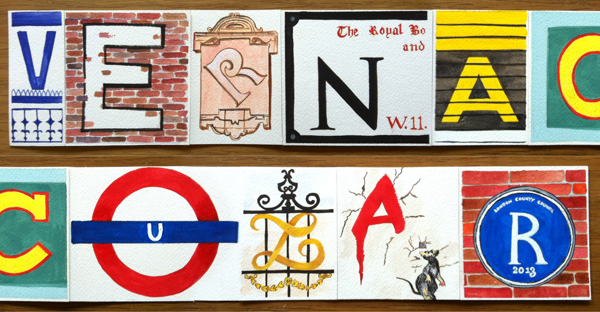

One vanishing art that can still be studied in the interstices of the assault
of global retail is vernacular typography. All over the world, there are cities
and towns that retain their rich traditions of vernacular signage. Unfortunately,
the fate of these typographic havens is being threatened by the uniformity of corporate advertising,
which ignores and subverts local history and tradition.
Vernacular Typography is defined as the letterforms selected, created,
or applied by person whose occupation is not derived from regular work with
letterforms (Heller and Thompson, 2000). Hence, the adoption of this typeface
can extend the boundaries of using the way we write to express ourselves without any rules as a new typography.